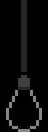
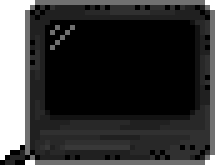

To get around the site, use the holes in the floor!
1 - home
2 - about me
3 - guestbook + links to friends' sites
4 - useful links, blog + interviews
Hi! I'm Hazel, although you may know me as Poserdom, Alifeofposerdom, Aoife, or any of the various other names and usernames I've gone by in my time online. I dabble in music, art, film, writing, development and many other things! This website is a personal project for me to serve as a home for my online activity...